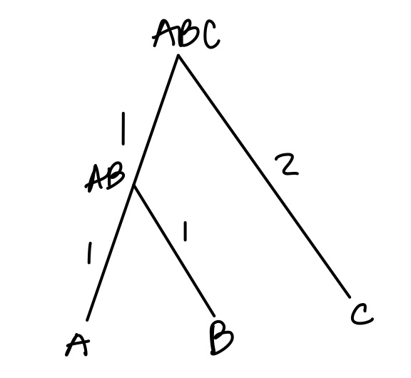

Last updated: 2022-01-24
Checks: 7 0
Knit directory: treedata.nosync/
This reproducible R Markdown analysis was created with workflowr (version 1.7.0). The Checks tab describes the reproducibility checks that were applied when the results were created. The Past versions tab lists the development history.
Great! Since the R Markdown file has been committed to the Git repository, you know the exact version of the code that produced these results.
Great job! The global environment was empty. Objects defined in the global environment can affect the analysis in your R Markdown file in unknown ways. For reproduciblity it’s best to always run the code in an empty environment.
The command set.seed(20220117) was run prior to running the code in the R Markdown file. Setting a seed ensures that any results that rely on randomness, e.g. subsampling or permutations, are reproducible.
Great job! Recording the operating system, R version, and package versions is critical for reproducibility.
Nice! There were no cached chunks for this analysis, so you can be confident that you successfully produced the results during this run.
Great job! Using relative paths to the files within your workflowr project makes it easier to run your code on other machines.
Great! You are using Git for version control. Tracking code development and connecting the code version to the results is critical for reproducibility.
The results in this page were generated with repository version 2ce7a85. See the Past versions tab to see a history of the changes made to the R Markdown and HTML files.
Note that you need to be careful to ensure that all relevant files for the analysis have been committed to Git prior to generating the results (you can use wflow_publish or wflow_git_commit). workflowr only checks the R Markdown file, but you know if there are other scripts or data files that it depends on. Below is the status of the Git repository when the results were generated:
Ignored files:
Ignored: .DS_Store
Ignored: .Rhistory
Ignored: data/.DS_Store
Ignored: data/ContinuousTrees/.DS_Store
Ignored: data/NodeTrees/.DS_Store
Ignored: data/NodeTrees/NodeTree1/.DS_Store
Ignored: data/NodeTrees/NodeTree2/.DS_Store
Ignored: data/NodeTrees/NodeTree3/.DS_Store
Ignored: data/NodeTrees/NodeTree4/.DS_Store
Ignored: data/NodeTrees/NodeTree5/.DS_Store
Ignored: data/NodeTrees/NodeTree6/.DS_Store
Ignored: data/NodeTrees/NodeTree7/.DS_Store
Ignored: data/NodeTrees/NodeTree8/.DS_Store
Ignored: data/NodeTrees/NodeTree9/.DS_Store
Ignored: data/dynversetree/.DS_Store
Ignored: data/dynversetree/EBMFfactors/.DS_Store
Ignored: figure/.DS_Store
Ignored: figure/divergence_counterexample.Rmd/
Ignored: figure/using_EBMF.rmd/.DS_Store
Ignored: output/.DS_Store
Ignored: output/ContinuousTrees/.DS_Store
Ignored: output/ContinuousTrees/tree1/.DS_Store
Ignored: output/ContinuousTrees/tree1/EBMFfactors/.DS_Store
Ignored: output/ContinuousTrees/tree2/.DS_Store
Ignored: output/ContinuousTrees/tree2/EBMFfactors/.DS_Store
Ignored: output/ContinuousTrees/tree3/.DS_Store
Ignored: output/ContinuousTrees/tree3/EBMFfactors/.DS_Store
Ignored: output/ContinuousTrees/tree4/.DS_Store
Ignored: output/ContinuousTrees/tree4/EBMFfactors/.DS_Store
Ignored: output/NodeTrees/.DS_Store
Ignored: output/NodeTrees/NodeTree1/.DS_Store
Ignored: output/NodeTrees/NodeTree1/EBMFfactors/.DS_Store
Ignored: output/NodeTrees/NodeTree2/.DS_Store
Ignored: output/NodeTrees/NodeTree2/EBMFfactors/.DS_Store
Ignored: output/NodeTrees/NodeTree3/.DS_Store
Ignored: output/NodeTrees/NodeTree3/EBMFfactors/.DS_Store
Ignored: output/NodeTrees/NodeTree4/.DS_Store
Ignored: output/NodeTrees/NodeTree4/EBMFfactors/.DS_Store
Ignored: output/NodeTrees/NodeTree5/.DS_Store
Ignored: output/NodeTrees/NodeTree5/EBMFfactors/.DS_Store
Ignored: output/NodeTrees/NodeTree6/.DS_Store
Ignored: output/NodeTrees/NodeTree6/EBMFfactors/.DS_Store
Ignored: output/NodeTrees/NodeTree7/.DS_Store
Ignored: output/NodeTrees/NodeTree7/EBMFfactors/.DS_Store
Ignored: output/NodeTrees/NodeTree8/.DS_Store
Ignored: output/NodeTrees/NodeTree8/EBMFfactors/.DS_Store
Ignored: output/NodeTrees/NodeTree9/.DS_Store
Ignored: output/NodeTrees/NodeTree9/EBMFfactors/.DS_Store
Note that any generated files, e.g. HTML, png, CSS, etc., are not included in this status report because it is ok for generated content to have uncommitted changes.
These are the previous versions of the repository in which changes were made to the R Markdown (analysis/divergence_counterexample.Rmd) and HTML (docs/divergence_counterexample.html) files. If you’ve configured a remote Git repository (see ?wflow_git_remote), click on the hyperlinks in the table below to view the files as they were in that past version.
| File | Version | Author | Date | Message |
|---|---|---|---|---|
| Rmd | 2ce7a85 | Sue Parkinson | 2022-01-24 | fixed more typos |
| html | b963d13 | Sue Parkinson | 2022-01-24 | Build site. |
| Rmd | 3df06b1 | Sue Parkinson | 2022-01-24 | fixed typos, added a discussion |
| html | f2f0f8d | Sue Parkinson | 2022-01-24 | Build site. |
| Rmd | ae28024 | Sue Parkinson | 2022-01-24 | finished counterexample |
| html | 212f33d | Sue Parkinson | 2022-01-24 | Build site. |
| Rmd | 6ca0927 | Sue Parkinson | 2022-01-24 | embed image |
| html | 0813a8d | Sue Parkinson | 2022-01-24 | Build site. |
| Rmd | dc855e1 | Sue Parkinson | 2022-01-24 | counterexample for divergence factorization |
In Chapter 2 of Jason Willwerscheid’s thesis, he defines the divergence factorization of tree structured data where data is only located at the leaves of a tree, and proves this factorization always exists. It would be natural to try to extend this definition to data at internal nodes. However, the factorization no longer always exists in this case, as the following counterexample shows.
For simplicity, I will work with the covariance matrix of the data. Assuming that \(\mathbf X\) has a divergence factorization \(\mathbf X\approx \mathbf L\mathbf F^\top\) with independent, mean zero factors is equivalent to assuming that \(Cov(\mathbf X) \approx \mathbf L\mathbf L^\top\) for some matrix \(\mathbf L\) that satisfies the following assumptions.
In total, a data set with \(K\) non-leaf nodes will have have \(K+1\) columns.
We will present a tree that such that the divergence factorization does not exist when internal node data is included. The counterexample presented is for the tree shown below. There are three leaf nodes (A,B and C), one internal node (AB), and one root node (ABC). The edge lengths are also shown in the image.

If we only look at the leaf nodes, we can get a divergence factorization. Here is the covariance matrix.
\[ \mathbf M= \begin{bmatrix} 2 & 1 & 0 \\ 1 & 2 & 0 \\ 0 & 0 & 2 \end{bmatrix} \] Let’s assume that a divergence factorization \(\mathbf M= \mathbf L\mathbf L^\top\) exists, and try to find \(\mathbf L\). If \(\mathbf L\) has the desired divergence structure, then for some \(\lambda_1,\lambda_2,\nu_2,\lambda_3,\nu_3 > 0\),
\[ \mathbf L= \begin{array}{cc} & \begin{array}{ccc} & ABC & AB \end{array} \\ \begin{array}{ccc} A \\ B \\ C \end{array} & \left( \begin{array}{ccc} \lambda_1 & \lambda_2 & \lambda_3 \\ \lambda_1 & \lambda_2 & -\nu_3 \\ \lambda_1 & -\nu_2 & 0 \\ \end{array} \right) \end{array} \]
Saying that \(\mathbf M= \mathbf L\mathbf L^\top\) is equivalent to saying that \(\mathbf M_{ij} = \sum_k \mathbf L_{ik} \mathbf L_{jk}\). This gives us the following system of equations.
\[\begin{align*} 0 &= \lambda_1^2 - \lambda_2 \nu_2 \\ 1 &= \lambda_1^2 + \lambda_2^2 - \lambda_3 \nu_3 \\ 2 &= \lambda_1^2 + \nu_2^2\\ 2 &= \lambda_1^2 + \lambda_2^2 + \lambda_3^2 \\ 2 &= \lambda_1^2 + \lambda_2^2 + \nu_3^2 \\ \end{align*}\]
The last two equations imply that \(\lambda_3^2 = \nu_3^2\). Since both values are positive, \(\lambda_3 = \nu_3\). By the second equation, we see that
\[1 = \lambda_1^2 + \lambda_2^2 - \lambda_3^2\] Combining this information with the fact that \[2 = \lambda_1^2 + \lambda_2^2 + \lambda_3^2,\] it is straightforward to see that \(\lambda_3 = \nu_3 = \frac{1}{\sqrt{2}}\). Here’s an updated system of equations with this new information.
\[\begin{align*} 0 &= \lambda_1^2 - \lambda_2 \nu_2 \\ \frac{3}{2} &= \lambda_1^2 + \lambda_2^2\\ 2 &= \lambda_1^2 + \nu_2^2. \end{align*}\]
If we add equations the second and third equations and use the fact that \(\lambda_1^2 = \lambda_2 \nu_2\), we see that
\[ \frac{7}{2} = \nu_2^2 + 2\lambda_2 \nu_2+ \lambda_2^2 = (\lambda_2 + \nu_2)^2. \] Thus \(\nu_2 + \lambda_2 = \frac{\sqrt{7}}{\sqrt{2}} = \frac{7}{\sqrt{14}}\). On the other hand,
\[ \frac{1}{2} = \nu_2^2 - \lambda_2^2 = (\lambda_2 + \nu_2)(\nu_2 - \lambda_2) = \frac{7}{\sqrt{14}}(\nu_2 - \lambda_2). \]
Then \(\nu_2 - \lambda_2 = \frac{1}{\sqrt{14}}\). It follows that \(\nu_2 = \frac{4}{\sqrt{14}}\) and \(\lambda_2 = \frac{3}{\sqrt{14}}\). Finally, \(\lambda_1^2 = \lambda_2 \nu_2 = \frac{6}{7}\). Overall, we see that\[ \mathbf L= \begin{array}{cc} & \begin{array}{ccc} & ABC & AB \end{array} \\ \begin{array}{ccc} A \\ B \\ C \end{array} & \left( \begin{array}{ccc} \frac{\sqrt{6}}{\sqrt{7}} & \frac{3}{\sqrt{14}} & \frac{1}{\sqrt{2}} \\ \frac{\sqrt{6}}{\sqrt{7}} & \frac{3}{\sqrt{14}} & -\frac{1}{\sqrt{2}} \\ \frac{\sqrt{6}}{\sqrt{7}} & -\frac{4}{\sqrt{14}} & 0 \\ \end{array} \right) \end{array} \]
If we add the internal node \(AB\), then the covariance matrix becomes
\[ \mathbf M= \begin{bmatrix} 1 & 1 & 1 & 0 \\ 1 & 2 & 1 & 0 \\ 1 & 1 & 2 & 0 \\ 0 & 0 & 0 & 2 \end{bmatrix} \]
If we assume that \(\mathbf M_{ij} = \sum_k \mathbf L_{ik} \mathbf L_{jk}\) and \(\mathbf L\) has the structure\[ \mathbf L= \begin{array}{cc} & \begin{array}{ccc} & ABC & AB \end{array} \\ \begin{array}{ccc} AB \\ A \\ B \\ C \end{array} & \left( \begin{array}{ccc} \lambda_1 & \lambda_2 & 0 \\ \lambda_1 & \lambda_2 & \lambda_3 \\ \lambda_1 & \lambda_2 & -\nu_3 \\ \lambda_1 & -\nu_2 & 0 \\ \end{array} \right) \end{array} \]
then we get the same system of equations with the additional restriction that \(\lambda_1^2 + \lambda_2^2 = 1\):
\[\begin{align*} 0 &= \lambda_1^2 - \lambda_2 \nu_2 \\ 1 &= \lambda_1^2 + \lambda_2^2 \\ 1 &= \lambda_1^2 + \lambda_2^2 - \lambda_3 \nu_3 \\ 2 &= \lambda_1^2 + \nu_2^2\\ 2 &= \lambda_1^2 + \lambda_2^2 + \lambda_3^2 \\ 2 &= \lambda_1^2 + \lambda_2^2 + \nu_3^2 \\ \end{align*}\]
This system has no solutions because the second and third equations imply that \(\lambda_3\nu_3 = 0\), which cannot be true if the last two equations are to hold.
While the counterexample above is is a rigorous, it does not necessarily provide a satisfactory intuitive understanding as to why the divergence factorization fails.
The goal of the factorization is to express the data as a linear combination of its factors \(F\). Each factor represents a direction which best separates the children of a particular node or “divergence event.” However, the children of the node in question will not necessarily diverge the same amount as the parent. Thus, it is hard to expect the loadings will be uniform among all of the nodes on the left or right.
In some ways, this is a disappointing result. However, it hopefully points in the right direction. Here are my thoughts.
Empirically, previous work has shown that computing divergence factorizations is easier than computing drift factorizations. Although we can not naively generalize the divergence factorization to internal nodes, we could generalize it in other ways. For example, it seems likely that some sort of divergence factorizations could exist for internal node data if if we add an additional drift term for every diverge as well (i.e., you drift towards a split, and then diverge from it). However, if we are computing drift terms, we may as well just compute the entire drift factorization.
Empirically, it seems that divergence factorizations could also be generalized by allowing multiple positive and negative values for each factor, instead of just one \(\lambda_k\) and one \(\nu_k\). In some sense, this is reasonable because the loading on the divergence reflects how far a data point has diverged.
However, our goal is to develop a simple tool for computing tree factorizations that works for both internal node and leaf node data, because it may be difficult to know a priori which case you are in. Neither of these generalizations are quite what we’re looking for.
This result suggests that computing drift factorizations may be the way to go. For instance, we know they exist with one uniform definition whether the data is from internal node or leaves. However, challenges remain in how to compute these factorizations.
In part these challenges stem from the fact that the rank of the data is usually approximately the same as the number of nodes from which the data was drawn. If we only have leaf data, the rank will be much smaller than the number of terms needed to write out a drift factorization, but comparable to the number of divergence terms needed. If we have data from the all the internal nodes, the rank is (approximately) equal to the number of drift terms needed.
I believe that, at least with internal node data, greedily and hierarchically adding divergence terms and then splitting them into two drift terms will likely lead to a successful algorithm for computing drift factorizations. The results in Drift and Divergence Factorizations are promising, but the drift algorithm used there needs additional refinement.
My idea for an algorithm is to…
I am hopeful that this algorithm will successfully compute drift factorizations in the case of true tree-like structure. It would not be able to allow for admixtures or allow any node to have more than two children, but it should allow for data at internal nodes, leaf nodes, and along edges, as well as avoiding detecting structure that does not exist.
One interesting “philosophical” question this raises is whether it is easier to recover a tree from leaf data or from internal node data.
On one hand, when you estimate the tree structure with internal node data, there are more ways to mess up. When there is just leaf data, you don’t necessarily explicitly estimate the location of the internal nodes, or know all the details of the relationships between them, in order to get the final relationships between the leaves correct. For example, simple methods like agglomorative clustering using single, complete, or average linkage clustering can return accurate information about the relationships between the leaves while never estimating the internal nodes.
However intuitively, it seems like internal node data inherently has more topological information, and it should be easier to recover the true structure with that extra information. Minimal spanning trees between clusters of points, for example, seem fairly successful, but are unlikely to give good results with only data at the leaves. I hope that we can develop a tool that takes advantage of the additional information inherent in internal data, but is still successful for with just the leaves.
sessionInfo()R version 4.1.2 (2021-11-01)
Platform: aarch64-apple-darwin20 (64-bit)
Running under: macOS Monterey 12.0.1
Matrix products: default
BLAS: /Library/Frameworks/R.framework/Versions/4.1-arm64/Resources/lib/libRblas.0.dylib
LAPACK: /Library/Frameworks/R.framework/Versions/4.1-arm64/Resources/lib/libRlapack.dylib
locale:
[1] en_US.UTF-8/en_US.UTF-8/en_US.UTF-8/C/en_US.UTF-8/en_US.UTF-8
attached base packages:
[1] stats graphics grDevices utils datasets methods base
other attached packages:
[1] workflowr_1.7.0
loaded via a namespace (and not attached):
[1] Rcpp_1.0.8 compiler_4.1.2 pillar_1.6.4 bslib_0.3.1
[5] later_1.3.0 git2r_0.29.0 jquerylib_0.1.4 tools_4.1.2
[9] getPass_0.2-2 digest_0.6.29 jsonlite_1.7.3 evaluate_0.14
[13] tibble_3.1.6 lifecycle_1.0.1 pkgconfig_2.0.3 rlang_0.4.12
[17] rstudioapi_0.13 yaml_2.2.1 xfun_0.29 fastmap_1.1.0
[21] httr_1.4.2 stringr_1.4.0 knitr_1.37 sass_0.4.0
[25] fs_1.5.2 vctrs_0.3.8 rprojroot_2.0.2 glue_1.6.0
[29] R6_2.5.1 processx_3.5.2 fansi_1.0.2 rmarkdown_2.11
[33] callr_3.7.0 magrittr_2.0.1 whisker_0.4 ps_1.6.0
[37] promises_1.2.0.1 htmltools_0.5.2 ellipsis_0.3.2 httpuv_1.6.5
[41] utf8_1.2.2 stringi_1.7.6 crayon_1.4.2